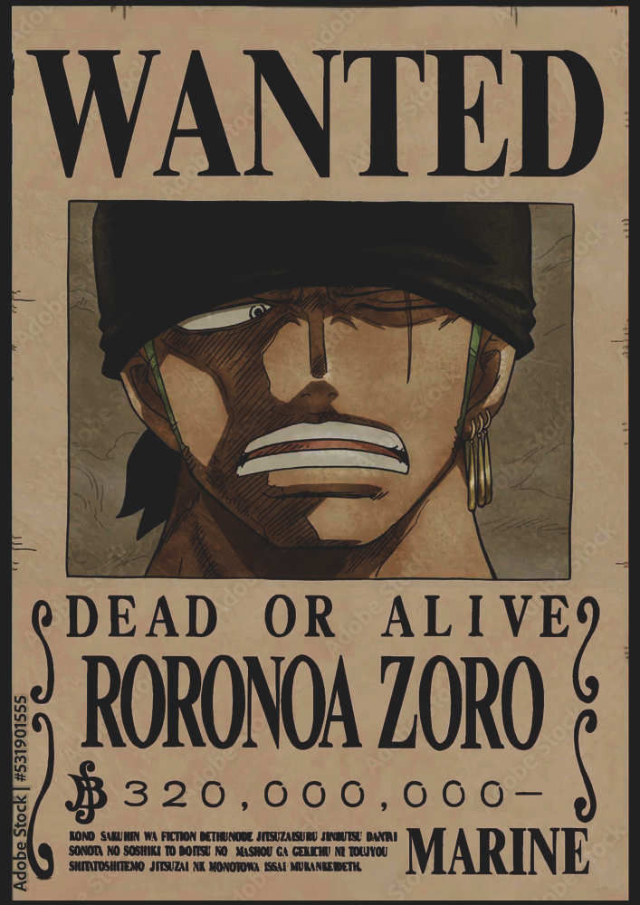

Roronoa Zoro, also known as "Pirate Hunter" Zoro, is a main combatant of the Straw Hat Pirates, one of their two swordsmen, one of the Senior Officers of the Straw Hat Grand Fleet, and is publicly recognized as the right-hand man of his crew's captain Monkey D. Luffy.